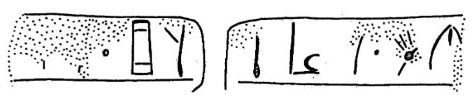

-
IOZa12
Names
IOZa12, IO Za 12
Support
Stone vessel
Location
Iouktas
Findspot
Unavailable

Scribe
Unavailable
Context
Late Minoan I
1600-1450 BCE
Dimensions
Catalogue
Hiraklion Museum
Readings
1 1 0 *900 none
1 1 1 *900 none
1 1 2 JA none
1 1 2 SA none
1 2 3 SA none
1 2 3 RA none
1 2 3 ME none
1 2 4 *900 none
1 2 5 I none
1 2 5 TI none
𐄁𐄁𐘱𐘞𐘞𐘴𐘋𐄁𐘚𐘠
*900*900JASASARAME*900ITI
𐄁𐄁𐘱𐘞
𐘞𐘴𐘋𐄁𐘚𐘠
*900*900JASA
SARAME*900ITI
IO Za 12
(HM 4518; Kar.-God.-Ol. 1985, 143), square
Libation Table, marble (terrace III, MM III-LM I context).
.a: ][• •] • JA-SA-
.b: -
SA
-RA-
ME
•
I-TI-[
the two sides break up the word
JA-SA- | -SA-RA-ME exactly as bifacial Hieroglyphic seals do (cf. CHIC
#
202
, etc. -- but contrast IO Za 16 below)
Commentary © John Younger
References